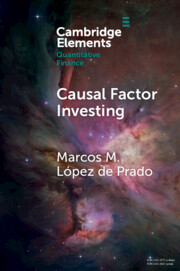
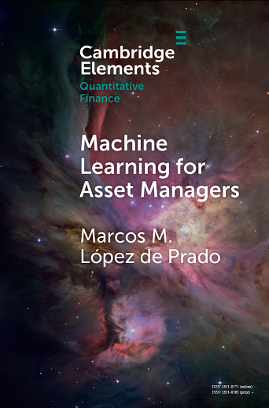
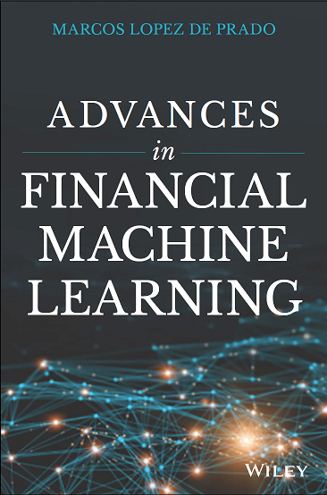
PUBLICATIONS
There is nothing more practical than a good theory. Many models successfully applied in scientific fields are tremendously useful in addressing critical investment management problems. I have been fortunate enough to meet and work extensively with some of the leading figures in Pure Mathematics, Mathematical Finance, Machine Learning, Market Microstructure and Econometrics. The majority of our findings are kept proprietary. From time to time, however, we decide to publish some of them in peer-reviewed journals.
  
RECENT PEER-REVIEWED JOURNAL ARTICLES
|
|
AUTHORS |
TITLE |
REFERENCE |
SUMMARY |
|
|
Fabozzi, Frank; Lopez de Prado, Marcos | Rethinking Portfolio Risk: A Taxonomy for Asset Management | Journal of Asset Management, Forthcoming. 2026. | We argue that portfolio risk should be classified by six interacting failure mechanisms—statistical, factor, liquidity, model, governance, and decision-infrastructure vulnerabilities—because severe losses typically arise from their compound effects rather than volatility alone. |
|
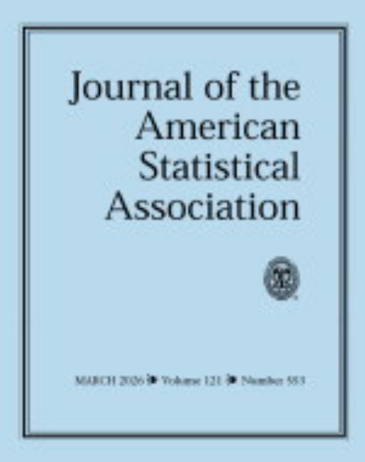 |
Lopez de Prado, Marcos; Porcu, Emilio | Random Patterns and Structures in Spatial Data | Journal of the American Statistical Association, Forthcoming. 2026. | We review Radu Stoica's work on this topic. |
|
|
Fabozzi, Frank; Lopez de Prado, Marcos; Lipton, Alexander | Interview with Marcos Lopez de Prado and Alexander Lipton of Abu Dhabi Investment Authority | Journal of Fixed Income, Forthcoming. 2026. | The interview argues that fixed-income and credit markets can benefit from AI, tokenization, and stablecoins, but only if institutions control backtest leakage, false discoveries, liquidity shocks, default clustering, and systemic coordination risks through rigorous governance and real-time oversight. |
|
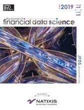 |
Olivetti, Emanuele; Zoonekynd, Vincent; Lopez de Prado, Marcos; Imbens, Guido; Hernán, Miguel | Evidence from ADIA Lab's Causal Discovery Challenge | Journal of Financial Data Science, Forthcoming. 2026 | This paper describes the ADIA Lab Causal Discovery Challenge conducted in 2024. The challenge focused on causal discovery, the task of inferring causal relationships from observational data, with an emphasis on the classification of variables according to their causal roles. |
|
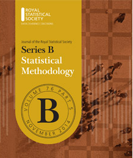 |
López de Prado and Porcu’s Comment on: Regression by Composition |
Journal of the Royal Statistical Society: Series B, Forthcoming. 2026. |
The article argues that regression by composition is a powerful descriptive framework for modeling conditional distributions, but it yields valid causal interpretations only when supplemented with externally justified structural assumptions and identification principles. |
|
|
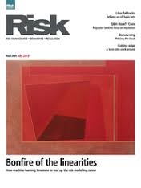 |
Valuing Private Equity Analytically |
Risk Magazine, April 2026. |
The paper derives closed-form valuations for private equity by optimizing allocation between liquid and illiquid assets under CARA utility. It shows that illiquidity, correlation, and leverage drive both optimal investment and pricing. | |
|
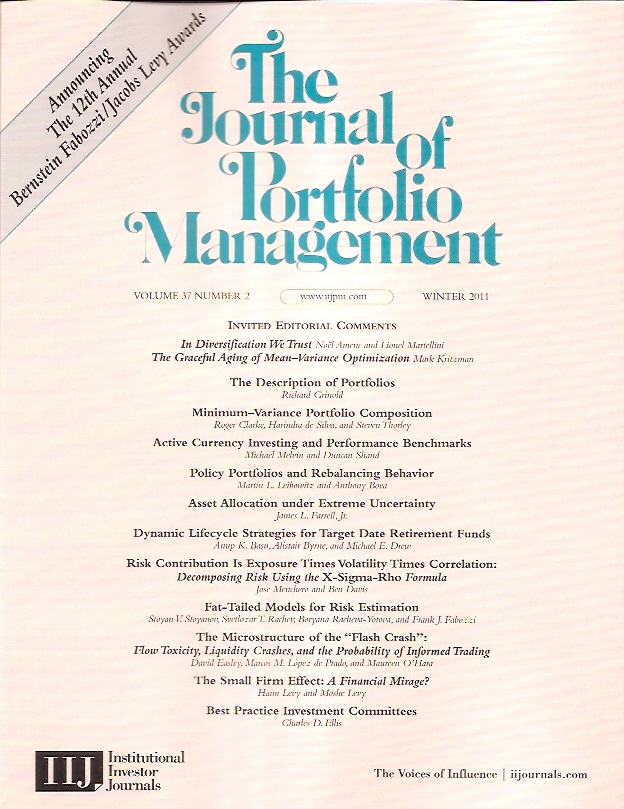 |
Lopez de Prado, Marcos; Lipton, Alexander; Zoonekynd, Vincent |
Sharpe Ratio Inference: A New Standard for Decision-Making and Reporting |
Journal of Portfolio Management, Vol. 52, No. 6, pp. 6-50. 2026. |
The paper shows that naive Sharpe ratio use is flawed due to bias, low power, p-value misuse, and multiple testing. It proposes corrected measures (PSR, MinTRL, DSR, Bayesian FDR) to make inference statistically valid. |
|
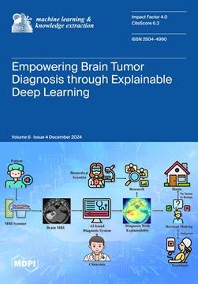 |
Herrera, Francisco; García, Salvador; del Jesús, María José; Sánchez, Luciano; Lopez de Prado, Marcos | Co-Explainers as Sociotechnical Infrastructure: A position on Interactive XAI for Governance and Harm Mitigation | Machine Learning and Knowledge Extraction, 8(3), pp. 1-37. 2026. | The paper proposes “co-explainers,” interactive AI systems that iteratively adapt their explanations through user feedback, institutional roles, and governance contexts, reframing explainable AI from static transparency tools into sociotechnical infrastructure for mitigating harms, ensuring accountability, and aligning AI with democratic trust and policy frameworks. |
|
|
Interview with Marcos Lopez de Prado of Abu Dhabi Investment Authority (ADIA) |
Journal of Portfolio Management, 52(5), pp. 18-24. 2026. |
Multi-asset backtests often overstate skill due to overfitting and hidden risks, making standard Sharpe ratios unreliable. I recommend causal design and statistical corrections like deflated Sharpe and false discovery controls to assess if performance is genuine. | |
|
|
Why Has Factor Investing Failed?: The Role of Specification Errors Correcting the Factor Mirage: A Research Protocol for Causal Factor Investing |
Journal of Portfolio Management, 52(3), pp. 10-47. 2026. |
We prove that, contrary to popular belief, factor strategies can yield systematic losses even if correlations remain constant and betas are estimated with the correct sign. For this reason, specification errors are arguably more dangerous to investors than p-hacking. |
|
|
|
Lopez de Prado, Marcos; Fabozzi, Francesco |
Implementing AI Foundation Models in Asset Management: A Practical Guide |
Journal of Portfolio Management, 52(2), pp. 11-22. 2025. |
This article provides a practical, educational overview of how asset management firms can integrate large language models (LLMs), including foundation models, into research, operations, and client-facing workflows. |
|
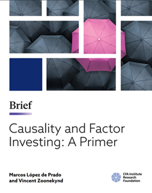 |
Causality and Factor Investing: A Primer | CFA Institute, 2025. | This paper introduces the concept of the factor mirage—a factor model that appears statistically valid but is causally misspecified, due to collider bias and confounder bias. By shifting from associational to causal reasoning, practitioners can build more robust strategies, reduce false discoveries, and restore trust in factor-based approaches. | |
|
|
Ten Applications of Financial Machine Learning |
Journal of Portfolio Management, 52(2), pp. 71-80. 2025. |
This article describes ten notable financial applications where ML has moved beyond hype and proven its usefulness. This success does not mean that the use of ML in finance does not face important challenges. The main conclusion is that there is a strong case for applying ML to current financial problems, and that financial ML has a promising future ahead. |
|
|
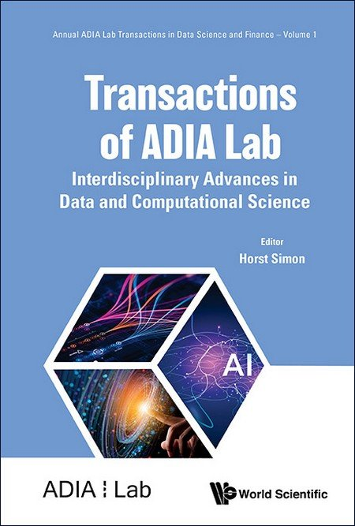 |
Herrera, Francisco; Herrera, Andres; del Ser, Javier; Herrera-Viedma, Enrique; Lopez de Prado, Marcos; | Trustworthy Artificial Intelligence: Nature, Requirements, Regulation, and Emerging Discussions | Transactions of ADIA Lab, 1(1), pp. 317-342. 2025. | We explore TAI from three complementary perspectives, and review contributions from the literature. |
|
|
Lopez de Prado, Marcos; Lipton, Alexander; Zoonekynd, Vincent |
Causal Factor Analysis is a Necessary Condition for Investment Efficiency |
Journal of Portfolio Management, 52(1), pp. 7-19. 2025. |
We show that causal factor modeling is a necessary condition for investment efficiency, and that the prevailing (associational) factor modeling paradigm leads to investment inefficiency. The biases introduced by factor model misspecification can be so large as producing portfolios where investors buy what they should sell and vice versa. |
|
|
Interview with Marcos Lopez de Prado of Abu Dhabi Investment Authority (ADIA) |
Journal of Portfolio Management, 51(8), pp. 67-73. 2025. |
In this interview, I explain my focus on uncovering microscopic alpha using machine learning and specialized teams. I highlight flaws of traditional econometrics, warn against overfitting and black-box models, and emphasize the importance of causal inference. I advocate for a scientific, transparent, and collaborative approach to financial research. | |
|
|
Antonov, Alexander; Lipton, Alexander; Lopez de Prado, Marcos |
Overcoming Markowitz's Instability with the Help of Hierarchical Risk Parity (HRP): Theoretical Evidence |
Risk Magazine, January 2025. |
We derive analytical values for the noise of allocation weights coming from the estimated covariance. We demonstrate that the HRP is less noisy (and thus more robust) than the classical Markowitz approach. |
|
|
A Conversation with Don Marcos (aka Marcos López de Prado) |
Journal of Portfolio Management, 7(1), pp. 10-16. 2025. |
"This interview offers a unique opportunity to delve into the insights of a visionary leader driving innovation in finance and machine learning." | |
|
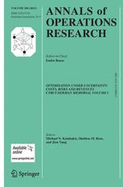 |
Lopez de Prado, Marcos; Simonian, Joseph; Fabozzi, Francesco; Fabozzi, Frank | Enhancing Markowitz's Portfolio Selection Paradigm with Machine Learning | Annals of Operations Research, 346, pp. 319-340. 2025. | By combining traditional econometrics with cutting-edge ML methodologies, we show how to enhance portfolio management processes including alpha generation, risk management, and optimization of risk metrics like conditional value at risk. |
|
|
Joubert, Jacques; Sestovic, Dragan; Barziy, Illya; Distaso, Walter; Lopez de Prado, Marcos |
The Three Types of Backtests (Enhanced Backtesting for Practitioners) |
Journal of Portfolio Management, 51(2), pp. 12-27. 2024. |
This article provides practitioners with guidance on adopting more reliable backtesting techniques, by reviewing the three principal types of backtests: Walk-forward, Resampling, and Monte Carlo. |
|
|
Lopez de Prado, Marcos; Lipton, Alexander; Zoonekynd, Vincent |
Journal of Portfolio Management, 51(1), pp. 146-158. 2024. |
This paper explains the dire consequences of factor investing’s specification errors, and calls for the need to rebuild the discipline under the more scientific foundations of causal factor investing. | |
|
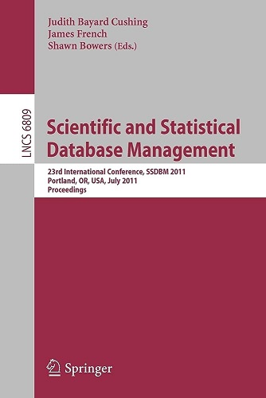 |
Chung, Joshua; Lopez de Prado, Marcos; Simon, Horst D.; Wu, Kesheng |
Data Driven Dimensionality Reduction to Improve Modeling Performance |
Proceedings of the 35th International Conference on Scientific and Statistical Database Management, ACM, 2023. |
We propose a new method for the clustering of features, and compare its performance with well-known dimensionality reduction methods. We also design a framework for systemtically optimizing the hyperparameters of dimensionality reduction methods. |
|
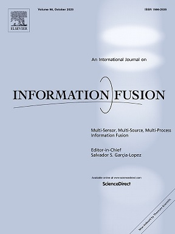 |
Diaz Rodriguez, Natalia; del Ser, Javier; Coeckelbergh, Mark; Lopez de Prado, Marcos; Herrera-Viedma, Enrique; Herrera, Francisco |
Connecting the Dots in Trustworthy Artificial Intelligence: From AI Principles, Ethics, and Key Requirements to Responsible AI Systems and Regulation |
Information Fusion, 99. 2023. |
Trustworthy Artificial Intelligence (AI) is based on seven technical requirements sustained over three main pillars that should be met throughout the system’s entire life cycle: (1) lawful, (2) ethical, and (3) robust, both from a technical and a social perspective. Our multidisciplinary vision of trustworthy AI also includes a regulation debate, with the purpose of serving as an entry point to this crucial field in the present and future progress of our society. |
|
|
Ranking Empirical Evidence in Finance (The Hierarchy of Empirical Evidence in Finance) |
Journal of Portfolio Management, 49(9), pp. 10-29. 2023. |
Recent progress in causal inference has opened a path, however difficult, for advancing financial economics beyond its current phenomenological stage. The goal of this article is to propose a hierarchy of empirical evidence, recognizing that not all types of observations have the same scientific weight, in the sense of enabling the falsification of causal claims. | |
|
|
Where are the Factors in Factor Investing? |
Journal of Portfolio Management, 49(5), pp. 6-20. 2023. |
In this article, I advocate for the use of causal graphs to modernize the field of factor investing, and set it on a logically-coherent foundation. | |
|
|
Confidence and Power of the Sharpe Ratio under Multiple Testing (Type I and Type II Errors of the Sharpe Ratio under Multiple Testing) |
Journal of Portfolio Management, 49(1), pp. 39-46. 2022. |
Most papers in the financial literature estimate the p-value associated with an investment strategy, without reporting the power of the test used to make that discovery. In this paper we provide analytic estimates to Type I and Type II errors for the Sharpe ratios of investments, and derive their familywise counterparts. These estimates allow researchers to carefully design experiments with high confidence and power. | |
|
|
Beyond Econometrics: A Roadmap Towards Financial Machine Learning (Machine Learning for Econometricians: The Readme Manual) |
Journal of Financial Data Science, 4(3), pp. 1-21. 2022. |
This article demonstrates that each analytical step of the econometric process has a homologous step in ML analyses. By clearly stating this correspondence, my goal is to facilitate and reconcile the adoption of ML techniques among econometricians. | |
|
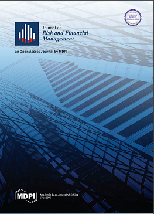 |
Mitigation Strategies for COVID-19: Lessons from the K-SEIR Model |
Journal of Risk and Financial Management, 15(6), 248. 2022. |
We propose an extension to SEIR, the standard epidemiology model. Our approach models the dynamics of heterogeneous groups. This is important for managing the spread of COVID-19, because the disease does not impact equally the entire population. |
|
|
|
How “Backtest Overfitting” in Finance Leads to False Discoveries |
Significance (Royal Statistical Society), 18(6), pp. 22-25. 2021. |
Commercial investment firms pay researchers for publishing academic articles that promote dubious investment strategies, without controlling for multiple testing. As a consequence, today’s academic finance shows some resemblance with medicine’s predicament during the 1950-2000 period, when Big Tobacco paid for thousands of studies in support of their bottom line. Academic finance’s denial of its reproducibility crisis risks its branding as a pseudoscience. | |
|
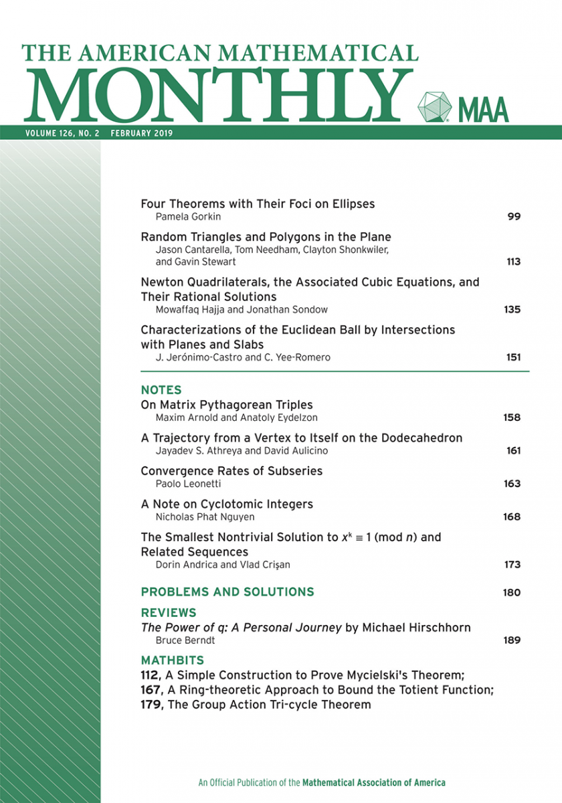 |
The False Strategy Theorem: A Financial Application of Experimental Mathematics |
American Mathematical Monthly, 128(9), pp. 825-831. 2021. |
We estimate the expected value of the maximum Sharpe ratio as a function of the number of trials. Through experimental mathematics, we evaluate the accuracy of the estimate. The implication is that there is no Sharpe ratio threshold above which we may reject the hypothesis that a strategy is false. With enough number of trials, any false strategy may achieve a Sharpe ratio as high as a researcher demands. | |
|
|
Easley, David; |
Review of Financial Studies, 34(7), pp. 3316-3363. 2021. |
We demonstrate how a machine learning algorithm can be applied to predict and explain modern market microstructure phenomena. We find that some microstructure-based measures are useful for out-of-sample prediction of various market statistics, leading to questions about the efficiency of markets. Our results are derived using 87 of the most liquid futures contracts across all asset classes. |
|
|
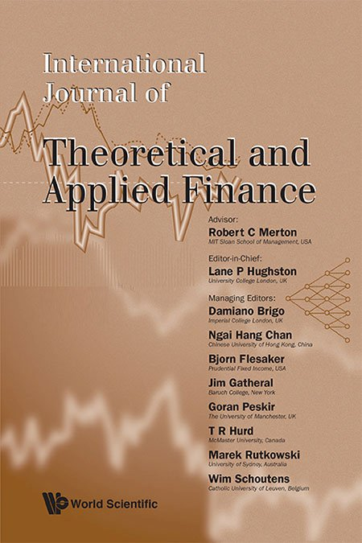 |
A Closed-Form Solution for Optimal Onrstein-Uhlenbeck driven trading strategies |
International Journal of Theoretical and Applied Finance, 23(8), 2050056. 2020. |
The price behavior of intraday prices can be approximated through an Ornstein-Uhlenbeck (OU) process. Using the method of heat potentials, we develop an analytical framework that derives the optimal trading levels of profit-taking, stop-losses, and maximum investment horizon. | |
|
|
A Closed-Form Solution for Optimal Mean-Reverting Trading Strategies |
Risk Magazine, June 2020. |
When prices reflect all available information, they oscillate around an equilibrium level. This price behavior can be approximated through an Ornstein-Uhlenbeck (OU) process. A mean-reverting trading strategy can monetize this oscillation at appropriate profit-taking, stop-loss and maximum-horizon levels. This paper develops an analytical framework that derives those optimal levels by using the method of heat potentials. | |
|
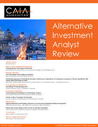 |
Alternative Investment Analyst Review (CAIA), 9(1), pp. 61-65. 2020. | There are three fundamental ways of testing the validity of an investment algorithm against historical evidence: a) the walk-forward method; b) the resampling method; and c) the Monte Carlo method. This papers studies the pros and cons of each method, and explains how investment firms may be organized for utilizing the Monte Carlo method. | ||
|
|
What Quants Can Learn from the COVID Crisis |
Risk Magazine, April 2020. |
Many quantitative firms have suffered substantial losses as a result of the COVID-19 selloff. In this note, we highlight three lessons that quantitative researchers could learn from this crisis. | |
|
|
Song, Jung H.; Lopez de Prado, Marcos; Simon, Horst D.; Wu, Kesheng |
Extracting Signals from High-Frequency Trading with Digital Signal Processing Tools |
Journal of Financial Data Science, 1(4), pp. 124-138. 2019. |
As algorithmic trading becomes more prevalent across all markets, cascading effects similar to the Flash Crash of May 6th 2010 become more likely. A case in point are the impact of weather forecasts on Natural Gas trading. We find that the Fourier components corresponding to high frequencies are becoming more prominent in the recent years, and are much stronger than what could be expected from the structure of this market. |
|
|
Lopez de Prado, Marcos; Lewis, Michael |
Detection of False Investment Strategies Using Unsupervised Learning Methods |
Quantitative Finance, 19(9), pp.1555-1565. 2019. |
In this paper we examine why false positives are so prevalent in finance, and we offer a practical solution to this industrywide problem. |
|
|
Crowdsourced Investment Research through Tournaments |
Journal of Financial Data Science, 1(4), pp. 1-8. 2019. |
Tournaments can overcome the two research barriers (domain-specific knowledge and data barriers), hence enabling the wide population of data scientists to contribute to the development of investment strategies. Accordingly, they constitute a viable quantitative organization paradigm, alongside the silo, factory, and platform paradigms. | |
|
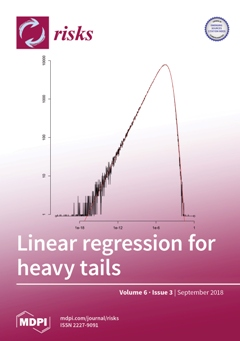 |
Risks, 7(3), pp. 86-120. 2019. |
Growth Optimal Portfolio (GOP) theory determines the path of bet sizes that maximize long-term wealth. This multi-horizon goal makes it more appealing among practitioners than myopic approaches, like Markowitz's efficient frontier. The GOP literature typically considers risk-neutral investors with an infinite investment horizon. In this paper, we compute the optimal bet sizes in the more realistic setting of risk-averse investors with finite investment horizons. |
||
|
|
A Data Science Solution to the Multiple-Testing Crisis in Financial Research |
Journal of Financial Data Science, 1(1), pp. 99-110. 2019. |
Most discoveries in empirical finance are false, as a consequence of selection bias under multiple testing. We present a real example of how the adjusted false positive probability can be computed and reported for public consumption. | |
|
|
Order from Chaos: How Data Science Is Revolutionizing Investment Practice |
Journal of Portfolio Management, 45(1), pp. 1-4. 2018. |
We describe some of the limitations of the econometrics toolkit, and how financial data science is helping overcome those limitations. | |
|
|
Being Honest in Backtest Reporting: A Template For Disclosing Multiple Tests |
Journal of Portfolio Management, 45(1), pp. 141-147. 2018. |
We propose a template that practitioners could use when pitching strategies to clients and senior management. By disclosing this information, those who are charged with making the final decision about a discovery can evaluate the probability that the purported discovery is false. | |
|
|
Aparicio, Diego; Lopez de Prado, Marcos |
How Hard is to Pick the Right Model? |
Algorithmic Finance, 7(1-2), pp. 53-61. 2018. |
We evaluate the performance of the model confidence set (MCS) introduced in Hansen et al. (2011). We find that MCS is not robust to multiple testing and that it requires a very high signal-to-noise ratio to discirimnate between true and false positives. |
|
|
The 10 Reasons Most Machine Learning Funds Fail |
Journal of Portfolio Management, 44(6), pp. 120-133. 2018. |
The rate of failure in quantitative finance is high, and particularly so in financial machine learning. The few managers who succeed amass a large amount of assets, and deliver consistently exceptional performance to their investors. However, that is a rare outcome, for the reasons outlined in this paper. | |
|
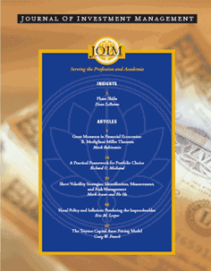 |
Bailey, David H.; Borwein, Jon M.; Salehipour, Amir; Lopez de Prado, Marcos | Evaluation and Ranking of Market Forecasters |
Journal of Investment Management, 16(2), pp. 47-64. April 2018. |
We develop a novel ranking methodology to rank the market forecaster. In particular, we distinguish forecasts by their specificity, rather than considering all predictions and forecasts equally important, and we also analyze the impact of the number of forecasts made by a particular forecaster. We have applied our methodology on a dataset including 6,627 forecasts made by 68 forecasters. |
|
|
Machine Learning Funds and Investment Malpractice |
Oxford Business Law, March, 2018. |
Although there are no laws specifically prohibiting backtest overfitting (yet), investors may have a legal case against this widespread investment malpractice that professional associations of mathematicians have deemed unethical. | |
|
|
Who needs a Newtonian Finance? |
Journal of Portfolio Management, 44(1), pp. 1-4. Fall 2017. |
In this article, we discuss economics' obsession with calculus. Instead of focusing on that narrow topic, economics and finance students should be taught a much wider variety of mathematical subjects. | |
|
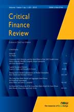 |
|
Critical Finance Review, 6(2), pp. 377-379. 2017. |
|
|
|
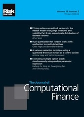 |
Bailey, David H.; Borwein, Jon M.; Lopez de Prado,
Marcos; Zhu, Jim |
The Probability of Backtest Overfitting |
Journal of Computational Finance, 20(4), pp. 39-70. 2017. |
We propose a framework
that estimates the probability of backtest overfitting (PBO) specifically in
the context of investment simulations, through a numerical method that we
call combinatorially symmetric cross-validation (CSCV). We show that CSCV
produces accurate estimates of the probability that a particular backtest is
overfit. |
|
|
Finance as an Industrial Science |
Journal of Portfolio Management, 43(4), pp. 5-9. Summer 2017. |
Finance cannot become a rigorous science (in the Popperian or Lakatosian sense), however it can still operate as an “industrial science”. This article describes the scientific method by which industrial finance discovers through experimentation, and avoids false discoveries. | |
|
|
Stock portfolio design and backtest overfitting |
Journal of Investment Management, 15(1), pp.1-13. 2017. |
We demonstrate a computer program that designs a portfolio consisting of common securities, such as the constituents of the S&P 500 index, that achieves any desired profile via in-sample backtest optimization. These portfolios typically perform erratically on more recent, out-of-sample data, which is symptomatic of selection bias. One implication of these results is that so-called smart beta funds, which are designed in-sample to deliver a desirable performance pro file, are likely to disappoint out-of-sample. |
|
|
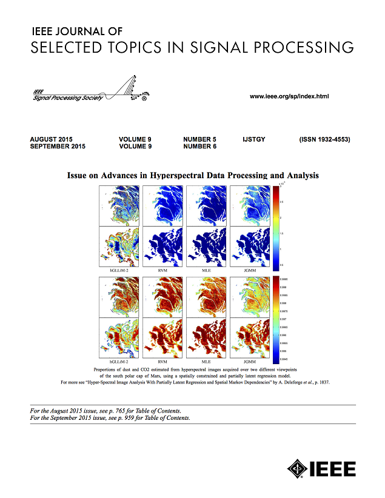 |
Rosenberg, Gili; Poya Haghnegahdar; Goddard, Phil; Lopez de Prado, Marcos; Carr, Peter; Wu, Kesheng |
Solving the Optimal Trading Trajectory Problem Using a Quantum Annealer |
IEEE Journal of Selected Topics in Signal Processing, 10(6), pp. 1053-1060. September 2016. |
We solve a multi-period portfolio optimization NP-complete problem using D-Wave's quantum annealer. The formulation incorporates transaction costs (including permanent and temporary market impact) and, significantly, the solution does not require the inversion of a covariance matrix. The discrete multi-period portfolio optimization problem we solve is significantly harder than the continuous variable problem. |
|
|
Mathematics and Economics: A reality check |
Journal of Portfolio Management, 43(1), pp. 5-8. Fall 2016. |
Economics (and by extension finance) is arguably one of the most mathematical fields of research. However, economists’ choice of math may be inadequate to model the complexity of social institutions. In a constructive spirit, this note offers some advice on how students could increase their chances of having a successful career in 21st century finance. Practitioners seeking to enhance their skillset may also draw some ideas. | |
|
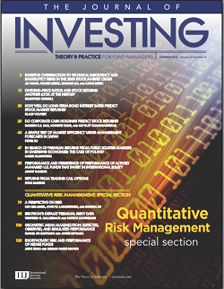 |
New Mathematical Tools in the Quant Arsenal |
Journal of Investing, 25(3), pp. 2-3. Fall 2016. |
We introduce Kinetic Component Analysis (KCA), a
state-space application that extracts the signal from a series of noisy
measurements by applying a Kalman Filter on a Taylor expansion of a
stochastic process. We show that KCA presents several advantages compared to
other popular noise-reduction methods such as Fast Fourier Transform (FFT) or
Locally Weighted Scatterplot Smoothing (LOWESS). |
|
|
|
Journal of Investing, 25(3), pp. 142-154. Fall 2016. |
We introduce Kinetic Component Analysis (KCA), a
state-space application that extracts the signal from a series of noisy
measurements by applying a Kalman Filter on a Taylor expansion of a
stochastic process. We show that KCA presents several advantages compared to
other popular noise-reduction methods such as Fast Fourier Transform (FFT) or
Locally Weighted Scatterplot Smoothing (LOWESS). |
||
|
|
Building Diversified Portfolios that Outperform Out-Of-Sample |
Journal of Portfolio Management, 42(4), pp. 59-69. Summer 2016. |
HRP portfolios address three major concerns of quadratic optimizers in general and Markowitz’s CLA in particular: Instability, concentration and underperformance. Monte Carlo experiments show that HRP delivers lower out-of-sample variance than CLA, even though minimum-variance is CLA’s optimization objective. HRP also produces less risky portfolios out-of-sample compared to traditional risk parity methods. | |
|
|
Quantitative Finance, 16(8), pp. 1175-1176, 2016. |
A review of the monograph recently published by Cambridge
University Press. |
||
 |
Journal of Financial Economics, 120(2), pp. 269-286. May 2016. |
We examine the accuracy of three methods for classifying trade data: Bulk Volume Classification (BVC), Tick Rule and Aggregated Tick Rule. We develop a Bayesian model of inferring information from trade executions, and show that BVC has the highest explanatory power over the bid-ask spread. | ||
|
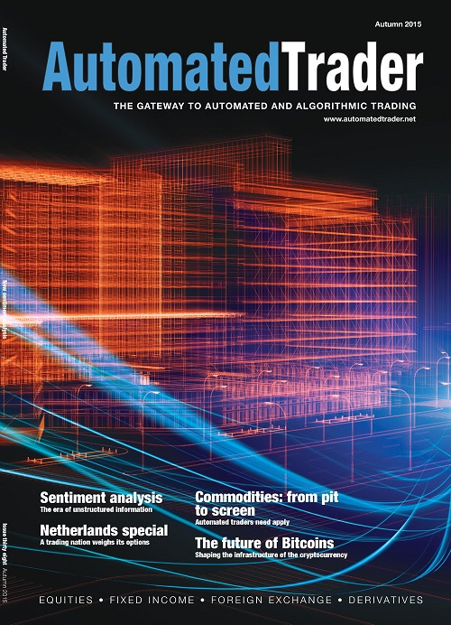 |
Bailey, David H.; Borwein, Jon M.;
Salehipour, Amir; Lopez de Prado,
Marcos; Zhu, Jim |
Backtest Overfitting in Financial Markets |
Automated Trader, Issue 39. Spring 2016. |
We introduce two online backtest overfitting tools: BODT simulates the overfitting of seasonal strategies (typical of technical analysis), and TMST simulates the overfitting of econometric strategies (typical of academic journals). We show that econometric methods lend themselves to extreme levels of overfitting, casting doubt on most investment strategies published in academic journals. |
|
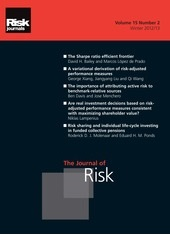 |
Stop-Outs Under Serial Correlation and "The Triple Penance Rule" |
Journal of Risk, 18(2), pp. 61-93. Fall 2015. |
We develop a framework for informing the decision of stopping a portfolio manager or investment strategy once it has reached a loss or time under water limit for a certain confidence level. Under standard portfolio theory assumptions, we show that it takes three times longer to recover from the expected maximum drawdown than the time it takes to produce it, with the same confidence level. Mathematical Appendices available here. |
|
|
|
Journal of Portfolio Management, 42(1), pp. 29-33. Fall 2015. |
Financial economics is a surprisingly prolific, topic redundant, asocial field, where most papers go largely ignored. Author collaboration improves scientific output, and yet financial economics seems to be one of the least cooperative empirical fields. If these trends continue, financial economics may be in the path to become a pathological science, a collection of “cold fusion” claims. | ||
|
|
Mathematical Finance, 25(3), pp. 640-672. July 2015. |
Execution traders know that market impact greatly depends
on whether their orders lean with or against the market. And yet, the
literature on optimal execution strategies rarely incorporates order
imbalance in the modeling of transaction costs. We introduce the OEH model,
which considers this fact when determining the optimal trading horizon for an
order, an input required by many sophisticated execution strategies. |
||
|
|
Journal of Portfolio Management, 41(4), pp. 140-144. Summer 2015. |
Empirical Finance is in crisis: Our most important discovery tool is historical simulation, and yet, most backtests and time series analyses published in journals are flawed. The problem is well-known to professional organizations of Statisticians and Mathematicians, who have publicly criticized the misuse of mathematical tools among Finance researchers. In this note I point to three problems and propose four practical solutions. An interview on this research appeared in IIJ's Practical Applications (Winter 2016). | ||
|
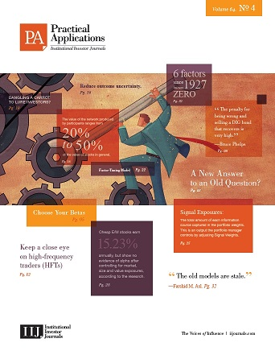 |
Practical
Applications, Institutional Investor Journals, 2(3),
pp. 1-3, Winter 2014. |
Quantitative Meta-Strategies (QMS) are quantitative strategies designed to manage investment strategies. As a field, QMS can be defined as the mathematical study of the decisions made by the supervisor of a team of investment managers, regardless of whether their investment style is systematic or discretionary. |
||
|
|
Bailey, David H.; Borwein,
Jon M.; Lopez de Prado, Marcos; Zhu, Jim |
Notices of the
American Mathematical Society, 61(5), pp. 458-471. May 2014. |
We prove that high simulated performance is easily
achievable after backtesting a relatively small number of alternative
strategy configurations, a practice we denote “backtest overfitting”. Because
financial analysts rarely report the number of configurations tried for a
given backtest, investors cannot evaluate the degree of overfitting in most
investment proposals. This is one of the first Mathematical Finance papers
published in the Notices of the AMS, the official membership journal of
the American Mathematical Society. |
|
|
|
A
Mixture of Gaussians Approach to Mathematical Portfolio Oversight: The EF3M
Algorithm
|
Quantitative Finance, 14(5), pp. 913-930. 2014 |
We solve the "Nonic Polynomial problem" posed by Karl Pearson in the 1894 edition of the Philosophical Transactions of the Royal Society.
We apply quantitative methodologies originated in the Mathematical Theory of
Evolution to model the dynamics of investment styles within a fund. |
|
|
|
The Deflated Sharpe Ratio: Correcting for Selection Bias, Backtest Overfitting and Non-Normality |
Journal of
Portfolio Management,
40 (5), pp. 94-107. 2014 (40th Anniversary Special Issue) |
The Deflated Sharpe Ratio (DSR) corrects for two
leading sources of performance inflation: Selection bias under multiple
testing and non-Normally distributed returns.
In this interview,
Prof. Bailey speaks about our work.
IIJ's Practical Applications (Winter 2015) featured this work. Other authors in this JPM Special Issue include: Cliff Asness (AQR), John Bogle (Vanguard), Mohamed El-Erian (Allianz), Robert Kapito (BlackRock), Mark Kritzman (Windham), Martin Leibowitz (Morgan Stanley), Burton Malkiel (Princeton) and Marc Reinganum (State Street). |
|
|
|
Algorithmic Finance,
3(1), pp. 21-42. 2014. |
We introduce Stochastic Flow Diagrams (SFDs), a new
mathematical approach to represent complex dynamic systems into a single
weighted digraph. This topological representation provides a way to visualize
what otherwise would be a morass of equations in differences. |
||
|
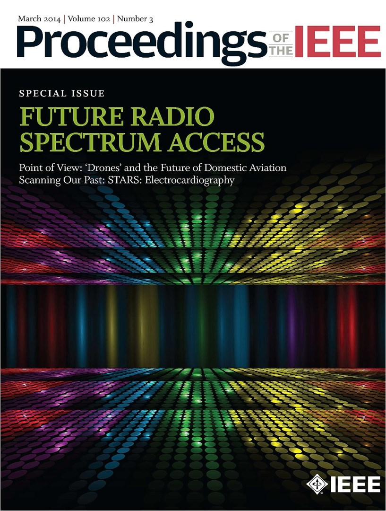 |
Song, Jung H.; Lopez de Prado, Marcos; Simon, Horst D.; Wu, Kesheng |
Exploring Irregular Time Series Through the Non-Uniform Fourier Transform | Proceedings of the International Conference for High Performance Computing, IEEE, 2014. | We explore the frequency domain of irregular time series by applying a Non-Uniform Fast Fourier Transform (NUFFT) on Natural Gas Futures prices. We show that High-Frequency Traders are responsible for a growing number of cyclical patterns. In particular, we observe the emergence of a new power law in the Fourier spectra in recent years. |
|
|
Journal of Financial Markets,
17(1), pp. 47-52. 2014. |
Discusses implementation cautions with regards to VPIN
empirical studies. |
||
|
|
The Topology of Macro Financial Flows: An Application of
Stochastic Flow Diagrams |
Algorithmic Finance,
3(1), pp. 43-85. 2014. |
We construct a network of financial instruments and show
how Stochastic Flow Diagrams (SFDs) allow researchers to monitor the
flow of capital across the financial system. Because our approach is dynamic,
it models how and for how long a financial shock propagates through the
system. |
|
|
|
An Open-Source implementation of the
Critical-Line Algorithm for Portfolio Optimization |
Algorithms, 6(1), pp. 169-196. 2013. |
We fill a gap in the literature by providing a
well-documented, step-by-step open-source implementation of the Critical-Line
Algorithm (CLA) in a scientific language. We discuss the logic behind CLA
following the algorithm’s decision flow. In addition, we have developed
several utilities that facilitate the answering of recurrent practical
problems. |
|
|
|
Bailey, David H.; |
The Strategy Approval Decision: A Sharpe Ratio
Indifference Curve Approach |
Algorithmic Finance,
2(1), pp. 99-109. 2013. |
The problem of capital allocation to a set of strategies could be partially avoided, or at least greatly simplified, with an appropriate strategy approval decision process. This paper proposes such procedure, by splitting the capital allocation problem into two sequential stages: Strategy approval and portfolio optimization. |
|
|
Journal of Risk, 15(2), pp. 3-44, Winter. 2012. |
Introduced the Probabilistic Sharpe Ratio (PSR), a new uncertainty-adjusted investment skill metric that corrects the inflationary effect that Non-Normality has on Sharpe Ratio estimates. It also determines the Minimum Track Record Length (MinTRL) needed to evidence skill. A Sharpe Ratio Efficient Frontier (SEF) arises, based on return-on-risk rather than return-on-capital. |
||
|
|
Balanced Baskets: A new approach to Trading and Hedging
Risks |
Journal of Investment Strategies,
1(4), pp. 21-62. Fall, 2012. |
Introduced the notion of Balanced Baskets, which are portfolios of instruments that evenly spread risks or exposures across their constituents without requiring a change of basis, like PCA. It also developed the algorithms needed to compute such baskets in hedging as well as trading applications. Finally, it also contributed a new procedure for covariance clustering. |
|
|
|
Journal of Portfolio Management,
39(1), pp. 19-29. Fall, 2012. |
This paper has been cited by Market Regulators [1, 2, 3] for deepening their understanding of the phenomenon of High Frequency Trading (HFT), beyond the simple notion of "speed trading". In particular, it argues that at the heart of HFT is a new investment paradigm based on making decisions in Volume Time. IIJ's Practical Applications (Fall 2013) featured this work. |
||
|
|
Review of Financial Studies, 25(5), pp. 1457-1493. 2012. |
Developed a new procedure to estimate the flow toxicity
impacting market makers, the Volume Synchronized Probability of Informed
Trading (VPIN). This metric has been shown to
anticipate liquidity crises (including the Flash Crash) and to be a good
predictor of toxicity-induced volatility. CFTC's HFT guidelines
cite this publication. |
||
|
|
Advances in Cointegration and Subset Correlation Hedging
Methods |
Journal of Investment Strategies,
1(2), pp. 67-115. Spring, 2012. |
Introduced two new hedging methods, called Dickey-Fuller Optimization (DFO) and Mini-Max Subset Correlation (MMSC). The former is a dynamic, cointegration based method while the latter is a static, balanced-basket method to evenly distribute exposure among portfolio constituents. It also generalized the Box-Tiao Canonical Decomposition (BTCD) method. |
|
|
|
Journal of Trading,
6(2), pp. 8-13. Spring, 2011. |
It introduced the concept of "Market Makers' Asymmetric Payoff Dilemma", which characterizes a liquidity provider as the seller of a real-option to be adversely selected. Since that option cannot be dynamically replicated, a new contract is proposed to allow market makers to hedge such risks. |
||
|
|
Journal of Portfolio Management,
37(2), pp. 118-128. Winter, 2011. |
This has become one of the most read papers in Finance, according to SSRN. It analyses the "Flash Crash" from a microstructure perspective, and concludes that it was a liquidity crises which resulted from market makers receiving persistently toxic order flow for at least 2 hours before the crash actually unfolded. |
||
|
|
Journal of Alternative
Investments, 7(1), pp. 7-31. Summer, 2004. |
It developed a new risk framework for assessing hedge funds' loss potential, considering Non-Normal and Serially-Correlated returns. It shows that the IID Normal assumption, ubiquitous in financial risk modeling, leads to a great underestimation of the loss potential of hedge funds. |
PEER-REVIEWED ACADEMIC BOOKS & CHAPTERS
|
|
AUTHORS |
TITLE |
REFERENCE |
SUMMARY |
|
|
Lopez de Prado, Marcos et al. | Transactions of ADIA Lab, Volume 1 | World Scientific, 2025. | Transactions of ADIA Lab is a peer-reviewed publication that captures the pioneering research emerging from ADIA Lab's interdisciplinary efforts in computational and data science. This inaugural volume reflects the Lab's rapid evolution into a global research hub, showcasing significant contributions in computational finance, the digital economy, advanced computational methods, and trustworthy AI. [Chapter 1], [Chapter 3], [Chapter 9], [Chapter 12] |
|
|
Lopez de Prado, Marcos | Causal Factor Investing | Cambridge University Press, 2023. | Factor investing remains at a phenomenological stage, as a consequence of authors not formulating causal theories that explain the observed associations. This monograph analyzes the current state of causal confusion in the factor investing literature, and proposes solutions with the potential to transform factor investing into a truly scientific discipline. |
| Lopez de Prado, Marcos | Machine Learning for Asset Managers | Cambridge University Press, 2020. | The purpose of this monograph is to introduce ML tools that are useful for discovering economic and financial theories. Successful investment strategies are specific implementations of general theories. An investment strategy that lacks a theoretical justification is likely to be false. Hence, a researcher should concentrate her efforts on developing a theory, rather than of backtesting potential trading rules. | |
|
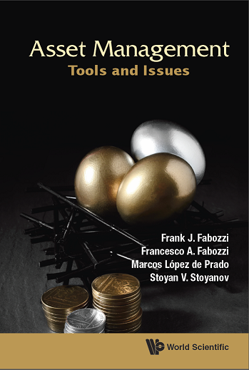 |
Fabozzi, Frank Fabozzi, Francesco A., Lopez de Prado, Marcos; Stoyanov, Stoyan V. | Asset Management: Tools and Issues | World Scientific, 2020. | This book provides a description of the tools used in asset management as well as a more indepth explanation of specialized topics and issues covered in the companion book, Fundamentals of Institutional Asset Management. |
|
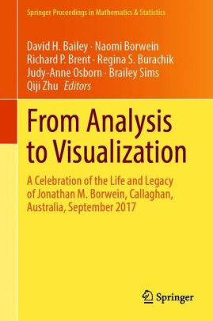 |
Bailey, David H.; Borwein, Jon M.; Salehipour, Amir; Lopez de Prado, Marcos | Do Financial Gurus Produce Reliable Forecasts?, in From Analysis to Visualization | Springer, 2020. |
This study develops a novel ranking methodology to rank market forecasters. In particular, we distinguish forecasts by their specificity, rather than considering all predictions and forecasts equally important, and we also analyze the impact of the number of forecasts made by a particular forecaster. We have applied our methodology on a dataset including 6,627 forecasts made by 68 forecasters. |
|
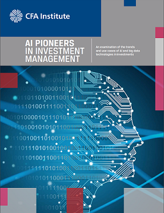 |
Lopez de Prado, Marcos | AI Pioneers in Investment Management | CFA Institute, 2019. | A report on how machine learning techniques address the pitfalls of convex optimization in general and MPT in particular. |
|
|
Lopez de Prado, Marcos | Advances in Financial Machine Learning | Wiley, 2018. | Machine learning (ML) is changing virtually every aspect of our lives. Today ML algorithms accomplish tasks that until recently only expert humans could perform. As it relates to finance, this is the most exciting time to adopt a disruptive technology that will transform how everyone invests for generations. |
|
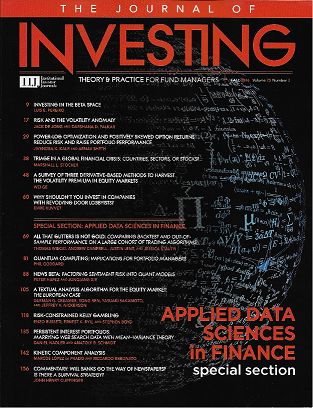 |
Lopez de Prado, Marcos (Ed.) | Special Guide to Applied Data Sciences in Finance | Journal of Investing, Vol. 25(3). 2016. | Today, scientists model financial markets as true complex dynamic systems, applying methodologies borrowed from all areas of science and engineering. Whether it is signal processing, network analysis or data visualization, modern methods can help us answer fundamental questions that traditional econometric methods have failed to tackle over decades. Co-authors include: Stephen Boyd, Riccardo Rebonato, Phil Goddard, Thomas Wiecki and Jessica Stauth. |
|
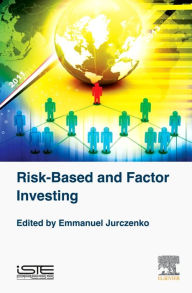 |
Bailey, David H.; Ger, Stephanie; Lopez de Prado, Marcos; Sim, Alexander; Wu, Kesheng | Statistical Overfitting and Backtest Performance, in Risk-Based and Factor Investing | Quantitative Finance Elsevier, 2016. | This book (edited by Emmanuel Jurczenko) is a compilation of recent articles written by leading academics and practitioners in the area of risk-based and factor investing (RBFI). The articles are intended to introduce readers to some of the latest, cutting edge research encountered by academics and professionals dealing with RBFI solutions. Together the authors detail both alternative non-return based portfolio construction techniques and investing style risk premia strategies. |
|
|
Easley, David; |
High Frequency Trading: New Realities for
Traders, Markets and Regulators |
Risk
Books, 2013. |
An overview of high frequency trading (HFT) strategies,
with a particular focus on how low frequency traders can survive in a high
frequency world. Contributors include leading practitioners and academics in this field: Robert Almgren (Quantitative Brokers, New York University), Wes Bethel (Lawrence Berkeley National Laboratory), Ming Gu (Lawrence Berkeley National Laboratory), Terry Hendershott (U.C. Berkeley), Charles Jones (Columbia University), Michael Kearns (S.A.C. Capital, University of Pennsylvania), David Leinweber (Lawrence Berkeley National Laboratory), Oliver Linton (University of Cambridge), Albert Menkveld (University of Amsterdam), Yuryi Nevmyvaka (University of Pennsylvania), Richard Olsen (Olsen Ltd.), Oliver Ruebel (Lawrence Berkeley National Laboratory), George Sofianos (Goldman Sachs), Michael Sotiropoulos (Bank of America Merrill Lynch), Kesheng Wu (Lawrence Berkeley National Laboratory), and Jean-Pierre Zigrand (London School of Economics). |
|
|
Complutense University, 2011. |
This is the author's second doctoral dissertation. The
generalization of electronic markets and ubiquitous automation of financial
transactions has rendered many established models and theories obsolete. This
work presents a new scientific framework for the study of some of the most
relevant questions concerning High Frequency Trading. |
||
|
|
Díaz de Santos,
2003. |
This is the author's first doctoral dissertation, which
dealt with portfolio optimization, risk management and capital allocation to
hedge funds. Once hedge funds' hidden risks are taken into account, optimal
allocations are much smaller than proposed by the standard Markowitz
approach. |
WORKING PAPERS AND BOOKS
|
AUTHORS |
YEAR |
TITLE |
SUMMARY |
| Herrera, Francisco; Herrera-Viedma, Enrique; Lopez de Prado, Marcos; Rodrigo-Comino, Jesús | 2026 | The Thucydides Trap in the Age of AI: Automated Science, Global Technological Advancement, and the Limits of Governance | We argue that AI-driven automated science and the prospect of AGI transform the Thucydides Trap from a traditional power-transition problem into a governance-capacity problem, where technological acceleration, strategic opacity, and institutional fragmentation risk turning innovation into systemic instability. |
|
Lopez de Prado, Marcos; Porcu, Emilio; Zoonekynd, Vincent; Robert F. Engle |
2026 | Signal-to-Noise Ratio Inference under Volatility Clustering and Heavy Tails | We derive a closed-form solution to the asymptotic variance of the Sharpe ratio under GARCH returns. |
| 2026 | The False Discovery Rate in Finance: Identification Failure and Search-Adjusted Estimation | We prove that the false discovery rate (FDR) cannot be identified from reported in-sample statistics when results arise from a search-and-selection process. We show that earlier methods used to infer a low FDR from the cross-section of published statistics are not valid, and can severely understate the true rate of false discoveries in finance. | |
|
Balasubramanian, Koushik; Lopez de Prado, Marcos |
2026 | Spectral Risk Parity | Utilizing concepts from random matrix theory, we propose a spectral approach to constructing risk parity portfolios. |
| 2026 | On the Asymptotic Distribution of the Sharpe Ratio under Weak Dependence and Non-Gaussian Returns | We derive an explicit asymptotic normal approximation for its plug-in estimator under weak dependence and finite "fourth plus epsilon" moments. | |
|
Herrera, Francisco; Gama, João; García, Salvador; del Jesus, María José; Lopez de Prado, Marcos; Sanchez, Luciano |
2025 | Apophatic Interpretability and the Limits of Understanding in AI | The paper argues that the complexity of modern AI systems makes complete, global interpretability virtually impossible, and proposes an “apophatic” approach that focuses on mapping limits, uncertainties, and what cannot be known rather than producing exhaustive explanations. |
|
Buscemi, Alessio; Cabot, Jordi, Chari, Pradyumna; Herrera, Francisco; Khan, Shadab; Lopez de Prado, Marcos; Raskar; Ramesh |
2025 | Towards Sandboxes for the Internet of Agents | The paper proposes a system of standardized “sandboxes” to test AI agents for reasoning, safety, and tool-use capabilities. These sandboxes produce cryptographically signed attestations that can be verified when agents interact, enabling safer and more accountable multi-agent systems. |
| Herrera, Francisco; Lopez de Prado, Marcos | 2025 | From Narrow AI to AGI and Strong AI: Reframing Intelligence, Governance, and Trustworthy Futures | The paper reframes the path from narrow AI to AGI and strong AI, emphasizing conceptual clarity, technical challenges, and the joint development of safety and governance frameworks to ensure trustworthy, human-aligned integration of advanced AI. |
| Lipton, Alexander; Lopez de Prado, Marcos |
2025 |
Private Equity Valuation with Quadratic Utility: A Continuous-Time Framework |
This paper presents a new approach to valuing private equity (PE) investments by developing analytical methods tailored to investors with quadratic utility preferences. |
| Lipton, Alexander; Lopez de Prado, Marcos |
2025 |
This paper develops new analytical techniques for valuing private equity (PE) investments. It concentrates on investors with exponential and quadratic utility functions and derives closed-form solutions for the nonlinear partial differential equations describing their certainty equivalent prices. |
|
|
Mentxaka,
Oier; Diaz Rodriguez, Natalia; Coeckelbergh, Mark; Lopez de Prado, Marcos; Gómez, Emilia; Fernández Llorca, David; Herrera-Viedma, Enrique; Herrera, Francisco |
2025 | Aligning Trustworthy AI with Democracy: A Dual Taxonomy of Opportunities and Risks | This paper introduces a dual taxonomy to evaluate AI's complex relationship with democracy: the AI Risks to Democracy (AIRD) taxonomy, which identifies how AI can undermine core democratic principles such as autonomy, fairness, and trust; and the AI's Positive Contributions to Democracy (AIPD) taxonomy, which highlights AI's potential to enhance transparency, participation, efficiency, and evidence-based policymaking. |
| Herrera-Poyatos, Andres; del Ser, Javier; Lopez de Prado, Marcos; Wang, Fei-Yue; Herrera-Viedma, Enrique; Herrera, Francisco | 2025 | A Framework for Responsible AI Systems: Building Societal Trust through Domain Definition, Trustworthy AI Design, Auditability, Accountability, and Governance | This paper explores the concept of a responsible AI system from a holistic perspective, which encompasses four key dimensions: 1) regulatory context; 2) trustworthy AI technology along with standardization and assessments; 3) auditability and accountability; and 4) AI governance. Alternative link here. |
| Antonov, Alexander; Balasubramanian, Koushik; Lopez de Prado, Marcos; Lipton, Alexander |
2024 |
A Geometric Approach to Asset Allocation with Investor Views |
We propose a geometric approach that provides investors with more flexibility in specifying their confidence in their views than conventional Black-Litterman approaches. We show that our approach rewards investors more for making correct decisions, relative to conventional Black-Litterman approaches. |
| Lopez de Prado, Marcos |
2022 |
Causal Factor Investing: Can Factor Investing Become Scientific? |
This article analyzes the current state of causal confusion in the factor investing literature, and proposes solutions with the potential to transform factor investing into a truly scientific discipline. I differentiate between type-A and type-B spurious claims, and explain how the latter prevent factor investing from advancing beyond its current phenomenological stage. |
| Lopez de Prado, Marcos; Peron, Ana Paula; Porcu, Emilio |
2022 |
We propose linear operators that allow for walks through dimension within generalized spaces while preserving positive definiteness. |
|
|
2019 |
I have divided this testimony into four sections, which discuss: (1) several types of automation currently being deployed in capital markets and the financial sector, and how they affect decision-making; (2) how machine learning (ML) and automation can help and hurt workers by disruption of the current and future financial services workforce; (3) what “RegTech” is and how ML can be deployed to help regulators better supervise financial institutions; and (4) algorithmic bias. |
||
|
2019 |
This paper introduces an algorithm to estimate forward-looking correlation matrices implied by economic theory. Given a particular theoretical representation of the hierarchical structure that governs a universe of securities, the method fits the correlation matrix that complies with that theoretical representation of the future. |
||
|
2019 |
Convex optimization solutions tend to be unstable, to the point of entirely offsetting the benefits of optimization. This instability can be traced back to two sources: (1) noise in the input variables; and (2) signal structure that magnifies the estimation errors in the input variables. We introduce a new optimization method that is robust to signal induced instability. |
||
|
Bailey, David H.; Borwein, Jon M.;
Salehipour, Amir; Lopez de Prado,
Marcos; Zhu, Jim |
2015 |
Backtest Overfitting Demonstration Tool: An Online Interface |
In this study we introduce two online tools, the Backtest Overfitting Demonstration Tool, or BODT for short, and the Tenure Maker Simulation Tool, or TMST, which illustrate the impact of backtest overfitting on investment models and strategies. We describe BODT and TSMT, the experiments they perform, together with technical details such as the evaluation metrics and parameters used. |
|
2015 |
Generalized Optimal Trading Trajectories: A Financial Quantum Computing Application |
Generalized dynamic portfolio optimization problems have no known closed-form solution. These problems are particularly relevant to large asset managers, as the costs from excessive turnover and implementation shortfall may critically erode the profitability of their investment strategies. In this brief note we demonstrate how this financial problem, intractable to modern supercomputers, can be reformulated as an integer optimization problem. Such representation makes it amenable to quantum computers. |
|
|
2014 |
We present empirical evidence of the existence of optimal trading rules (OTRs) for the case of prices following a discrete Ornstein-Uhlenbeck process, and show how they can be computed numerically. Although we do not derive a closed-form solution for the calculation of OTRs, we conjecture its existence on the basis of the empirical evidence presented. Also available in ArXiv. |